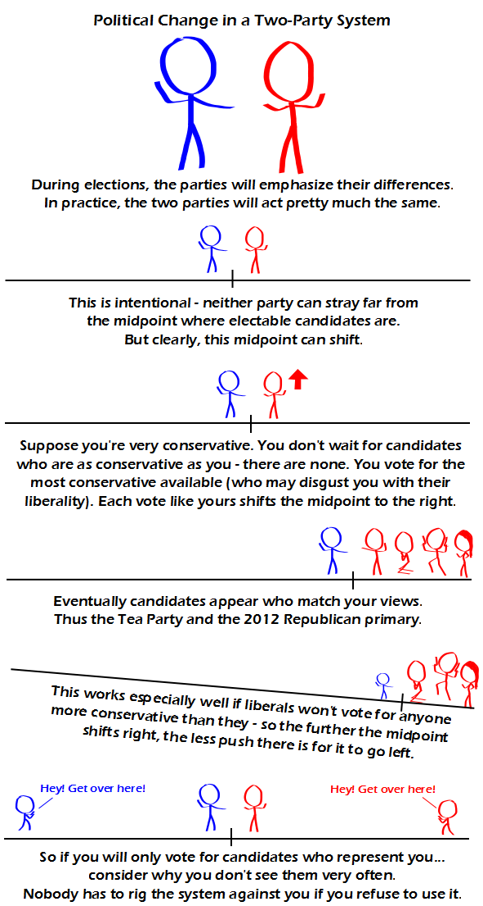

Comic JK 820
When I Feel Like It
⇤
<
?
>
⇥

⇤
<
?
>
⇥
Forum
.
RSS
.
Digg
.
Facebook
.
Reddit
.
Twitter
.
Stumbleupon
Enter your thoughts on number 820 here. Please, no spamming, trolling, phreaking, or two-party systems. Beautiful > Yes, your mother is. Which would all be interesting if the current government was conservative. It isn't. (I'm not saying it's liberal, either!) > that's kind of the point of the comic. The government is in the middle, but the middle can become more conservative or liberal. > you know that outside USA the colours usually are opposite (left red, right blue)? (just notice for the international part, at least) ... Except the notions of liberal/conservative right/left don't even really exist. They're just labels that don't even reflect actual platforms. >... in the same way that North and South don't even reflect actual places. Therefore those don't exist either? >Well, that's a clear indication that you've got your two-party blinders on. In Canada, where there's 3 (and a half) noteworthy parties, we have the right wing Conservative party with all its military and business support ideals, a mid range Liberal party that balances socialist and conservative ideals, and the socialist NDP which is quite happy with the idea of debt loads comparable to those of the US as long as the government gets to pay for everything. (Disclaimer: all three party descriptions are in hyperbole - conservatives aren't nutcases, NDP aren't trying to implement a communist regime, and the Liberals aren't entirely average in every way). The half party is a Quebec based party that's primary goal is to make Quebec a sovereign nation with Canada filling all the tough roles like foreign policy while not paying taxes or following other policies. (There are also others, the Greens being the only one that's won a seat as far as I know.) >New Political Party idea: Red Light Party. Everyone wears a hat representing how ignorant they are of actual issues. >>Oh oh that one already exists! They've been televising debates the last few months. >The absence of a real distinction between the platforms of two-party systems is another consequence of only having two parties: each tries to increase their share of the vote by moderating their policies to woo the undecideds, with the result that both drift towards a centralist position and end up becoming indistinguishable. Meanwhile the radicals at either end are splintering off. We have a Single Member District (SMD) style of legislature where elections are based on a plurality, which leads to a two-party system in which both sides tend toward a midpoint. Proportional representation (PR) systems are more likely to result in multiple parties and coalition forming. Just FYI.